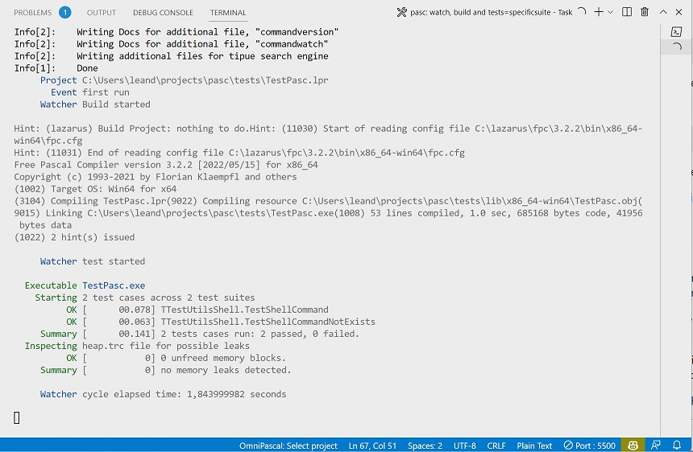

Watch
Description
The watch command is used to monitor the project folder for changes to the code, and from this event trigger the build process, the execution of the application or the test project. You can use it from the command line as follows:
pasc watch [options] <project file or path>
There are one argument and three options to configure watch command behavior:
Project file or path
You can pass the name of the desired project target for execution, build or tests. It is also possible to just pass a "." as a parameter leaving pasc to search for the respective project according to the other flags informed.
--build
pasc will attempt to build the given project or find an .lpi file in the current directory if the –run option was given, or try to find a test project .lpi file if the –test option was given. If there is a build error, the cycle is interrupted and pasc enters a state of waiting for new changes, for example, if it was requested to execute or test these processes will not be executed.
It is worth mentioning that the order of passing the parameters does not interfere with the order of the watch command, which is: build, run or test.
pasc will print to the console all output generated by FreePascal compiler and also the output from lazbuild.
--run
pasc will attempt to run the project and capture its output and display it in the console. It is necessary that there is an executable with the same name as the informed project, or that there is a FreePascal project already compiled in the folder. It makes a lot of sense to run –run in combination with –build, as this combination will reflect changes in the code into the application's new behavior by creating the executable needed to run.
pasc will print to the console all output generated by the application.
This option accetps a value that will be passed as parameters to the application that is being executed.
Ex:
--run="showtext 'my long text parameter'"
In the above example, the application will be called with two parameters: showtext and "my long text parameter".
--test
For the –test parameter, it is necessary to inform a test project compatible with fpcunit Framework, or that there is a project of the type in the "tests" subfolder of the project. It is important to combine the –build option with –test so that the test executable is available for pasc to extract its contents and present it in the console to the developer.
pasc will generate a test report using the same output generate by test command.
This option "–test" can be given a value that represents a test suite or just a unit test. In this way, watch can work on a specific scenario, bringing the developer greater efficiency and time reduction in solving more complex problems.
Examples
Example for main project:
pasc watch --run --build
This example will build the main FreePascal project found on current folder and output build information and any info provided by the application during execution.
Example for test project:
pasc watch --run --test
This example will build the test project found on current folder or in tests subfolder and output build information and also a test report like that for test command.
Example for test project with a specific suite:
pasc watch --run --test=TTestUtilsShell
Output:

This example will build the test project found on current folder or in tests subfolder and output build information and also a test report limited to the TTestUtilsShell class.
In addition to executing via the command line, it is also possible to trigger the watch using tasks added by the pasc new command. Tasks can be configured in the tasks.json file and start with the text "pasc: watch...".
Output
We can notice that the output of the watch command has some information that can bring some value to the developer. The first one deals with the target project, followed by the build information if the respective parameter was informed.
Then pasc runs the target project and writes its output to the console. The watch is waiting for the execution to finish to go to the next phase. In the case of the test program a test report is written to the output.
At the end of the cycle, information is written to the console informing the total time used for the cycle, allowing the developer to decide whether or not to optimize the execution time. Requesting watch to run a specific test suite can greatly reduce cycle time.
Whenever a change is detected, a new cycle will start and if the project program is running, it will be terminated so that the new cycle can begin.
Generated by PasDoc 0.16.0.